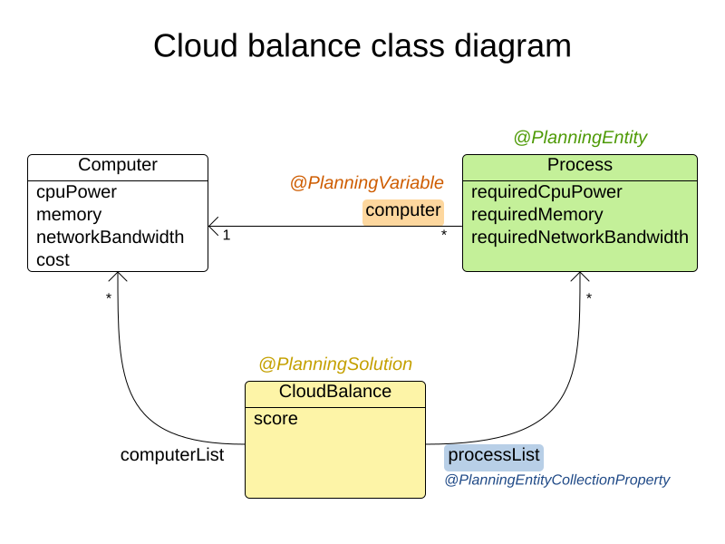

Real-time planning meets SolverManager
For some optimization problems it may take minutes or even hours before an acceptable solution is found.
The world, however, will not wait until the computation is finished. What if an employee calls in sick or a vehicle
breaks down? With OptaPlanner, you can either reload the updated problem, or react in real time by submitting a ProblemChange.
Before we look at problem changes and the SolverManager API, let’s get familiar with the problem domain used in all the following examples,
Cloud Balance:

Every computer has some capacity of CPU, memory and network bandwidth. Processes, on the other hand, require certain
amount of the same resources. Processes are the planning entities; they are being assigned to computers.
Anatomy of a ProblemChange
ProblemChange replaces the ProblemFactChange interface, allowing incremental changes of the working solution during
solving without reloading it, just as the ProblemFactChange does. However, the ProblemChange reduces
the amount of required boilerplate code and also leaves less room for mistakes.
public interface ProblemChange<Solution> {
void doChange(Solution workingSolution, ProblemChangeDirector problemChangeDirector);
}The doChange() method, which you have to implement, receives the working solution and the ProblemChangeDirector.
Any change to the working solution has to be done via ProblemChangeDirector methods. Otherwise, OptaPlanner doesn’t notice the change.
Let’s have a look at the following problem change that adds a new planning entity:
public class AddProcessProblemChange implements ProblemChange<CloudBalance> {
private final CloudProcess process; // (1)
public AddProcessProblemChange(CloudProcess process) {
this.process = process;
}
@Override
public void doChange(CloudBalance cloudBalance, ProblemChangeDirector problemChangeDirector) {
problemChangeDirector.addEntity(process, cloudBalance.getProcessList()::add); // (2)
}
}The new
CloudProcessinstance.The
addEntity()method takes the process and a lambda describing how the new process should be included in the working solution.
Here we add the process to the collection of all processes in the working solution.
Every time OptaPlanner finds a new best solution, a component called SolutionCloner clones the working solution, which, unlike the best solution,
keeps changing until the solving terminates. However, for performance reasons, OptaPlanner does not make a deep clone of the working solution;
it clones only those parts of the solution that change during solving – the planning entities.
Other instances, called problem facts, are not cloned and thus the working solution and all the best solutions found during solving share them.
This is usually the right thing to do, but not if the problem facts change as a part of your ProblemChange implementation.
In that case, any problem fact or a problem fact collection must be cloned first, otherwise you may corrupt your previous best solutions.
For more details about solution cloning, please read the documentation.
In the next example, we are removing a CloudComputer, which is a problem fact:
public class DeleteComputerProblemChange implements ProblemChange<CloudBalance> {
private final CloudComputer computer;
public DeleteComputerProblemChange(CloudComputer computer) {
this.computer = computer;
}
@Override
public void doChange(CloudBalance cloudBalance, ProblemChangeDirector problemChangeDirector) {
CloudComputer workingComputer = problemChangeDirector.lookUpWorkingObjectOrFail(computer); // (1)
for (CloudProcess process : cloudBalance.getProcessList()) {
if (process.getComputer() == workingComputer) {
problemChangeDirector.changeVariable(process, "computer",
workingProcess -> workingProcess.setComputer(null)); // (2)
}
}
List<CloudComputer> computerList = new ArrayList<>(cloudBalance.getComputerList()); // (3)
cloudBalance.setComputerList(computerList); // (3)
problemChangeDirector.removeProblemFact(workingComputer, computerList::remove); // (4)
}
}Finds the working solution counterpart of the
computer. TheCloudComputermust have a field annotated with@PlanningId.Unassigns this computer from every process that runs on it. The string “computer” is the name of a
@PlanningVariablefield of theCloudProcess.As the
SolutionClonerdoes not clone a problem fact collection, it has to be done manually.Removes the computer from the
computerList.
While the ProblemChange implementation might be simple in some cases, in others it may require changing multiple connected
parts of the working solution. A correct ProblemChange implementation has to perform any changes
on the working solution instance using the ProblemChangeDirector and has to respect requirements on solution cloning.
SolverManager
SolverManager serves as an entry point for submitting planning problems to OptaPlanner. It allows solving multiple problems
of the same kind in parallel and offers non-blocking operations that pass the best solutions to a user-defined Consumer.
Now, it also supports adding the ProblemChanges, as the next example shows:
public class SolvingService {
@Inject
SolverManager<CloudBalance, Long> solverManager; // (1)
public void startSolving(Long problemId) {
solverManager.solveAndListen(problemId, this::loadProblem, bestSolution -> saveSolution(problemId, bestSolution)); // (2)
}
public void addComputer(Long problemId, CloudComputer computer) {
solverManager.addProblemChange(problemId, (workingSolution, problemChangeDirector) -> { // (3)
List<CloudComputer> computerList = new ArrayList<>(workingSolution.getComputerList());
workingSolution.setComputerList(computerList);
problemChangeDirector.addProblemFact(computer, computerList::add);
});
}
private CloudBalance loadProblem(Long problemId) {
// Load the input problem identified by the problemId.
}
private void saveSolution(Long problemId, CloudBalance cloudBalance) {
// Save the best solution, or send it to UI, etc.
}
}Injects the
SolverManager, assuming the application runs on top of Quarkus. Similarly, your can inject theSolverManager
in a Spring Boot application using the@Autowiredannotation.Submits a problem to the
SolverManager. Every best solution is passed to thesaveSolution()method.Adds a new computer to the working solution identified by the
problemIdvia aProblemChange.
Testing ProblemChanges
As any piece of a software project that implements non-trivial logic, ProblemChanges should be unit-tested.
What is the testable contract? First, make sure the right methods on the ProblemChangeDescriptor are called, and second,
the working solution must contain the expected changes.
To help you with testing whether the correct methods of the ProblemChangeDescriptor were called, there is the MockProblemChangeDirector
available in org.optaplanner:optaplanner-test.
The final example below shows how to use the MockProblemChangeDirector together with Mockito.
public class CloudBalanceChangeTest {
@Test
public void addProcess() {
CloudProcess newProcess = new CloudProcess();
CloudBalance workingSolution = CloudBalance.emptySolution();
MockProblemChangeDirector mockProblemChangeDirector = Mockito.spy(new MockProblemChangeDirector()); // (1)
ProblemChange problemChange = new AddProcessProblemChange(newProcess);
problemChange.doChange(workingSolution, mockProblemChangeDirector); // (2)
verify(mockProblemChangeDirector).addEntity(same(newProcess), any()); // (3)
assertEquals(1, workingSolution.getProcessList().size()); // (4)
assertSame(newProcess, workingSolution.getProcessList().get(0)); // (4)
}
}Mockito.spy()wraps theMockProblemChangeDirectorinstance and acts as a proxy.
That makes it possible to verify whether some method of theMockProblemChangeDirectorhas been called and what arguments
have been passed to it.Performs the problem change, supplying the
MockProblemChangeDirector.Verifies that the
ProblemChangeDescriptor.addEntity()has been called with thenewProcessas its first argument.Verifies that the working solution contains the newly added process.
Conclusion
SolverManager now supports ProblemChanges, offering real-time planning capabilities without having to write a lot of boilerplate code.
“)